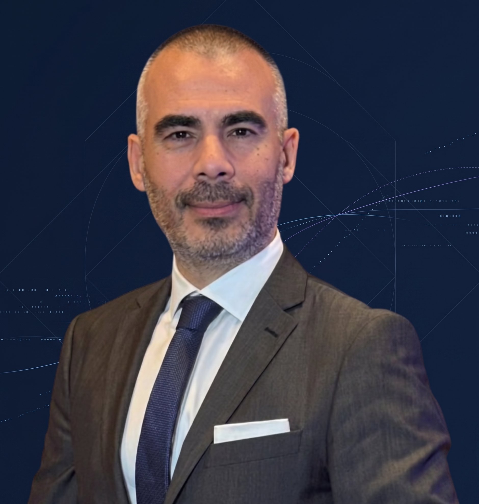
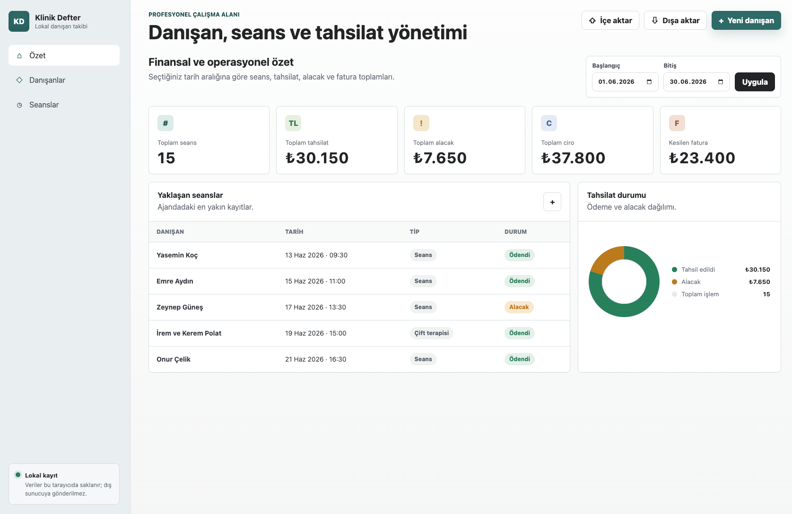
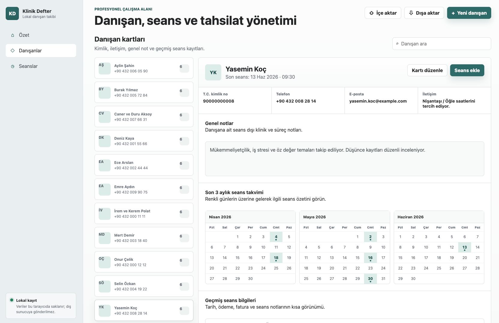
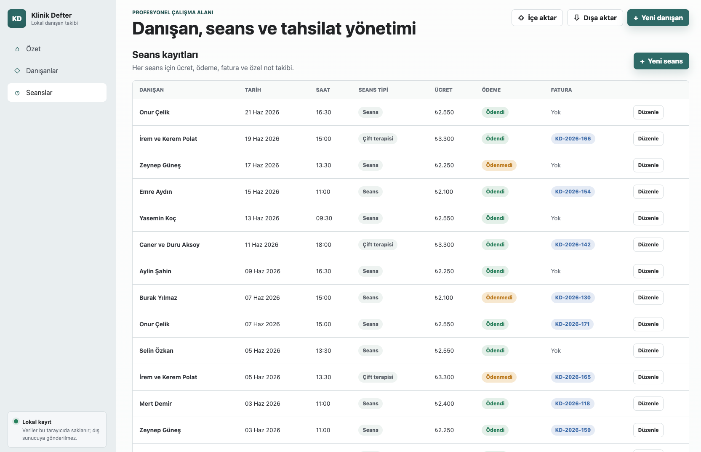
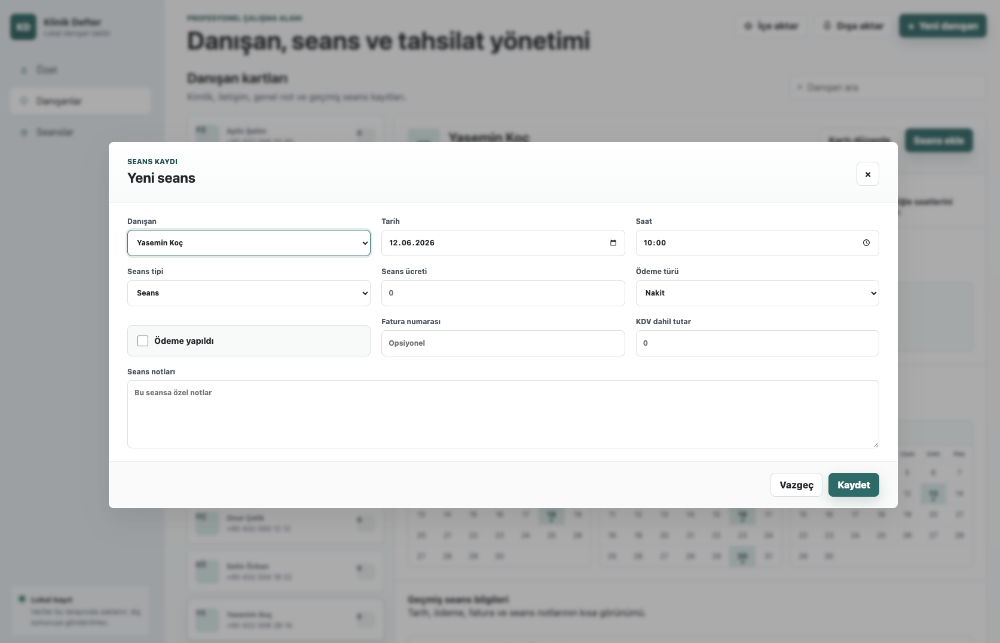

25+ yıllık bankacılık ve kurumsal finans deneyimine sahibim. Günümüzde finans, teknoloji ve yapay zekâ alanlarındaki gelişmeleri yakından takip ediyor ve bu alanlarda kendimi geliştirmeye devam ediyorum.

İstanbul Üniversitesi İşletme Fakültesi mezunuyum. Kariyerim boyunca bankacılık, yatırım ve kurumsal finans alanlarında farklı liderlik rollerinde görev aldım.
25 yılı aşkın profesyonel deneyimim boyunca şube yönetiminden özel bankacılığa, yatırım ürünlerinden kurumsal finansman süreçlerine kadar geniş bir yelpazede sorumluluk üstlendim.
Son yıllarda yapay zekâ ve yazılım teknolojilerine ilgi duyuyor; bu alanlarda öğrenmeye, denemeye ve projeler geliştirmeye devam ediyorum. Finansal tecrübemi yeni teknolojilerle birleştirerek farklı bakış açıları geliştirmeyi hedefliyorum.
Finansal strateji, bütçeleme, nakit akışı yönetimi, yatırımcı ilişkileri ve kurumsal yeniden yapılandırma süreçlerinde liderlik.
Nakit akışı yönetimi, bütçe hazırlama, finansal kurumlarla ilişkiler, finansal raporlama ve üst yönetime sunum süreçleri.
Finans kökenli bir profesyonel olarak, yapay zekâ ve yazılım teknolojilerini öğreniyor, deneyimliyor ve çeşitli projeler geliştiriyorum. Bu bölümde zaman içinde geliştirdiğim uygulamalar, oyunlar ve dijital ürünler yer alacaktır.
Yapay zekâ, otomasyon, web uygulamaları ve öğrenme odaklı denemeler.
YakındaEğitici ve eğlenceli web tabanlı oyun projeleri.
YakındaFinansal araçlar, üretkenlik uygulamaları ve masaüstü yazılımlar.




Profesyonel iş birlikleri ve fırsatlar için benimle iletişime geçebilirsiniz.